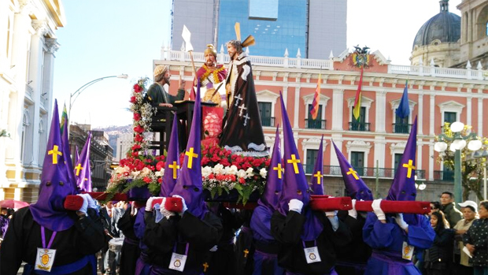
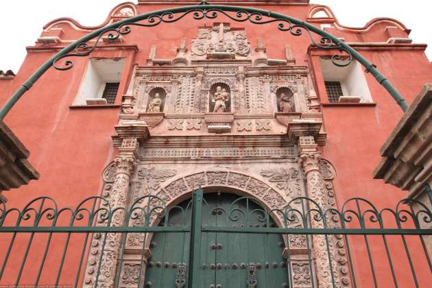

Procesiones en La Paz
Vive la experiencia de las majestuosas procesiones

Alfombras Florales en Sucre
Arte efímero que adorna las calles

Iglesias Coloniales de Potosí
Patrimonio cultural durante Semana Santa
Rutas Turísticas
- Ruta de las Iglesias Coloniales Nuevo
- Circuito de Procesiones
- Tour Gastronómico Cuaresmal
- Recorrido por Alfombras Florales
- Vía Crucis Vivientes

Eventos Destacados
Conciertos en iglesias coloniales durante toda la Semana Santa.
Artesanías y souvenirs religiosos en la plaza principal.
Consejos para Turistas
Reserve alojamiento con anticipación
Respete las tradiciones locales
Testimonios
Una experiencia cultural inolvidable. Las procesiones son impresionantes.
Recomendación
Hace 2 días
No te pierdas las alfombras florales de Sucre al amanecer.